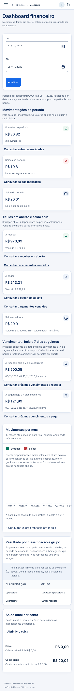
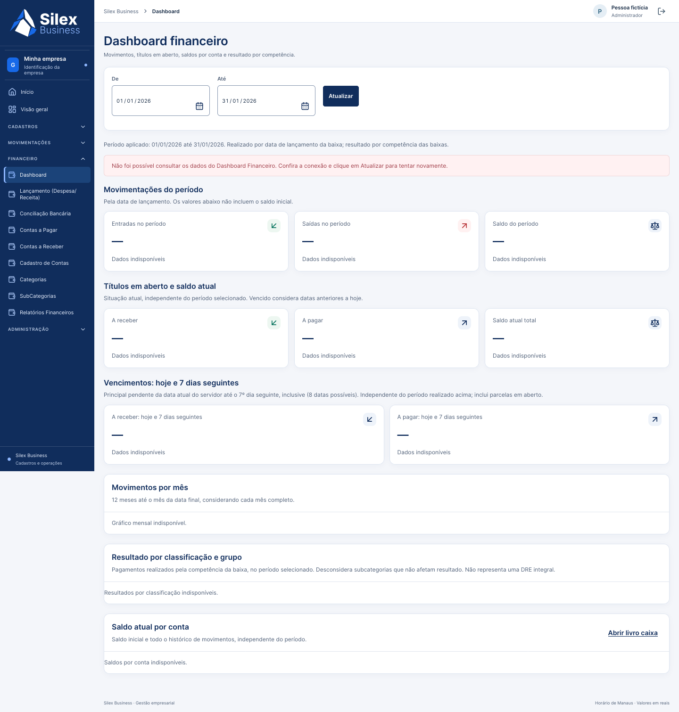
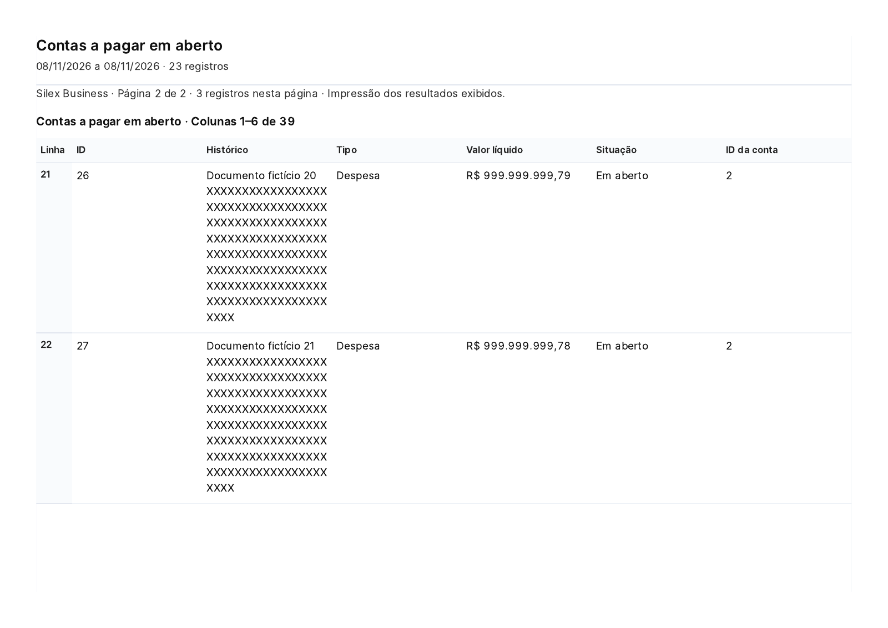
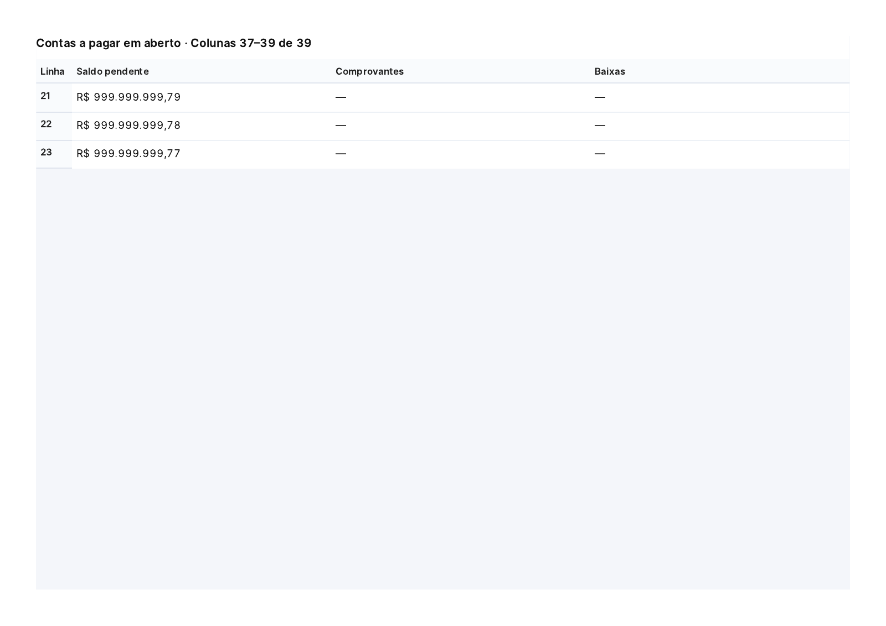

Capturas reais de testes locais, banco descartável e dados fictícios. Não representam a Railway, clientes reais, homologação humana, impressão física ou aprovação comercial.
Relatório · Defeitos · Fluxos · Liberação futura


Antes: oito páginas A4 · Depois: quatro páginas A4 · Texto e limites físicos conferidos. Campos e fontes preservados; faixas pequenas são mantidas juntas, com identificadores de linha. O primeiro grupo com descrição longa pode continuar entre páginas.


Relatório com baixa parcial e comprovante fictício: conteúdo textual selecionável, datas e valores em português; nenhum objeto é convertido para “[object Object]”. PDF gerado por Chromium; Firefox foi validado em mídia print, sem declaração de impressão física.
Matriz Firefox completa · Matriz Chromium final · Backend · Frontend · Container/backup/restauração · 124 comparações financeiras · Varredura de segredos sem valores.
Resultados de CI pertencem ao HEAD do Draft PR. Consulte seus checks e descrição. Automação e galeria não certificam WCAG, acessibilidade assistiva, ausência absoluta de bugs ou isolamento entre empresas.